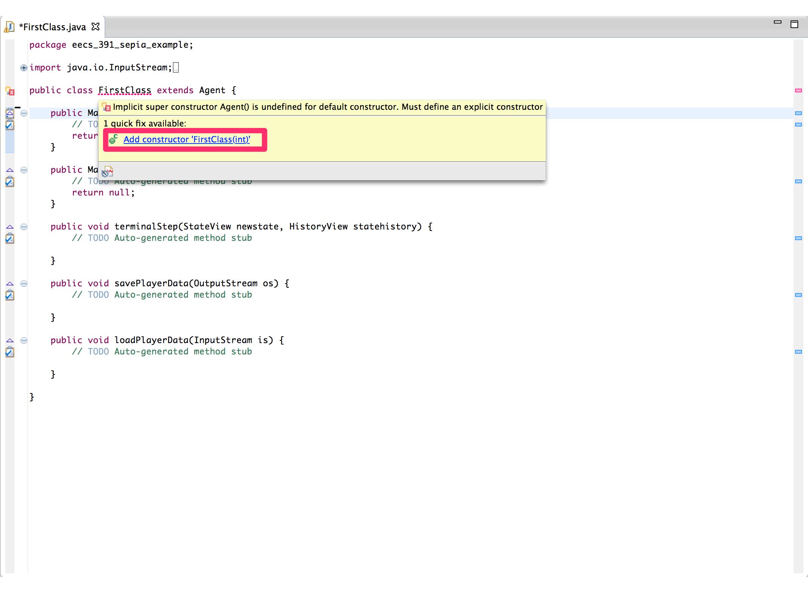

Your First Agent¶
Create the Class¶
All agents in Sepia are subclass of the edu.cwru.sepia.agent.Agent
class. To create the class skeleton which we will fill in right click
on the src fold and select New->Class. This will open a new
window where you will specify the name and the super class.
{kind=link}
{kind=link}
In the Name field put in the name of your class. In this tutorial
we will be using the name FirstClass. Then click the Browse
button next to the super class line. This will open a new window. In
the search line type the word “agent” without the quotes. You should
see a bunch of results and the top one should say
edu.cwru.sepia.agent.Agent. Click on this line and then click the
ok button. You can now close the new class window by clicking Finish.
{kind=link}
You should now have an empty class with five blank methods. Before we run our agent we will need to fill in these methods. First thing is that your inherited class needs a constructor that takes in an integer. This integer specifies the instance’s player number which is important for determining who units belong to. Insert the default constructor by mousing over the class name and clicking on the Add constructor option. You should now have a class that compiles.
{kind=link}
Setup the Configuration¶
Open the FirstAgentConfig.xml file from the data file. Change the
text of the <ClassName> tag to match the full class path of your
agent. Save the file.
Now make a duplicate of one of the run configurations from the
Running Resource Collection Agent Example section. Change the configuration
file to FirstAgentConfig.xml. You can run this configuration
now, but your agent will not do anything.
Basic Agent API¶
There are three main methods you need to implement in your agent:
initialStep, middleStep, and terminalStep. The
initialStep method is run once before the start of an
episode. This is a good method to do any special initialization that
requires information about the map and your units. You also specify
your first unit actions in this method. The middleStep is called
every other round during an episode. This is where the bulk of your
agent logic will go. You will be able to look at the current state of
the game, the history of the game and assign actions to your
units. Finally terminalStep is run once after an episode has
finished. You cannot specify anymore unit actions as the episode is
over, but you can look at the final state and the game history. This
is a good place to sum up any statistics and log them.
Each of these methods is passed two objects: a StateView and a HistoryView object. StateView contains all of thei nformation about the current state of the game. Normally this includes the entire game state, but if fog of war is enabled then you will only be able to see information about units near your units. HistoryView contains information about events that have occurred on previous turns such as HP changes and unit deaths and creations.
You use the StateView object to access information about your units
such as their type, ID, location, HP and held resources. You will use
this information to construct actions to put in the action map. To get
a list of all of your units you will use the
stateview.getUnitIds(playernum) where playernum is your player
number or the enemy you are getting information about. Your agent can
access its playernum via the superclass’s playernum variable. This
method will return a list of Integers. To find out what type of unit
corresponds to each unit ID you will need to get the UnitView and then
the TemplateView. To get a UnitView given an ID use the method
stateview.getUnit(unitID). To get the TemplateView of a UnitView
use the method unitView.getTemplateView(). The TemplateView allows
you to view default information for given unit types. Here is a small
code snippet illustrating how to access all units for an agent and
print their types.
List<Integer> unitIDs = stateview.getUnitIds(playernum);
for(Integer unitID : unitIDs)
{
UnitView unitView = stateview.getUnit(unitID);
TemplateView templateView = unitView.getTemplateView();
System.out.println(templateView.getName() + ": " + unitID);
}
Useful UnitView Methods¶
All of these methods are called on instances of UnitView.
- getCargoAmount()
- Returns the numerical amount of the resource that unit is holding
- getCargoType()
- Returns the type of resource the unit is holding (either Gold, Wood, or nothing)
- getHP()
- Numerical amount of health remaining. When the unit health reaches 0 it will die
- getXPosition()
- X position in the map (starts at 0 with 0 on the left side)
- getYPosition()
- Y position in the map (starts at 0 with 0 at the top)
- getCurrentDurativeAction()
- Returns the current action the unit is performing or none.
- getCurrentDurativeProgress()
- Returns the numerical progress towards completion. The higher the number the closer to completion.
Useful Map Methods¶
All of these methods are called on a StateView object
- getXExtent()
- The width of the map
- getYExtent()
- The height of the map
- getResourceNodeIds(<Resource Type>)
- Gets a list of resource node ids. This will allow you to access the
resource nodes on the map. Similar to a UnitView a resource node
object will allow you to find information about the resources such
as position and amount remaining. <Resource Type> can be either
Type.GOLD_MINESorType.TREEto get a list of Gold Mines and a list of Trees respectively.
Once you have a list of Resource IDs you can get resource nodes with
the method stateview.getResourceNode(<ID>). Then you can access
information about the resource with the following methods.
- resource.getXPosition()
- X Position on the map of the resource
- resourcre.getYPosition()
- Y Position on the map of the resource
- resource.getAmountRemaining()
- Numerical amount of the resource remaining in the resource. Once this number reaches 0 the resource will disappear from the map
Actions¶
There are different types of actions and some units can perform. They are:
- Production Action
Actions that create a unit
e.g. a town hall making a peasant
- Targeted Action
- Actions that command a unit to go somewhere for some purpose
- Located Action
- Commands a unit to go to a particular spot
- Located Production Action
- Commands a unit to go to a particular spot and build a building
- Directed Action
- A primitive action that involves looking in a particular direction
In addition to these action types there are two main action classes: Compound actions, and primitive actions. Compound actions combine primitive actions automatically and execute them in the necessary order. They can take many turns to execute. Primitive actions are a single action that typically take a single turn.
Many actions require a building or unit template. To access these use
the method stateview.getTemplate(playernum, "Peasant").getId()
where you replace Peasant but the appropriate unit or building name.
Compound Action Descriptions¶
To create a compound action you will need to construct an appropriately typed action. Each of the descriptions lists the proper action type. Here is a code snippet demonstrating the construction of a compound gather action
Action gatherAction = new TargetedAction(pesantID, ActionType.COMPOUNDGATHER, goldMineID);
- COMPOUNDATTACK
- targeted attack
- parameters: your unit ID and enemy unit ID
- moves into range of the unit and attacks it once
- COMPOUNDBUILD
- Located production action
- parameters: your unit ID, building template ID, X and Y
- moves to the specified location and then builds until the building is done
- COMPOUNDDEPOSIT
- targeted action
- parameters: your unit ID and a town hall ID
- moves next to the town hall and deposits all held resources
- COMPOUNDGATHER
- targeted action
- parameters: your unit ID and the ID of the resource node
- moves next to specified resource and gathers as many resources as can be held
- COMPOUNDMOVE
- located action
- parametesr: your unit ID, X and Y
- moves to the specified location
- COMPOUNDPRODUCE
- production action
- parameters: building ID and unit template ID
- does a primitive produce until the unit is complete
Primitive Action Descriptions¶
To create a primitive action you will use the factory methods in the Action class. For example:
Action primitiveProduce = Action.createPrimitiveProduce(buildingID, templateID);
- PRIMITIVEATTACK
- TargetedAction
- Parameters are your unit’s ID and the enemy unit’s ID
- Tries to attack the enemy unit. If it’s out of range, nothing happens.
- PRIMITIVEBUILD
- ProductionAction
- Parameters are your unit’s ID and the building template ID.
- Does one turn of work towards building that building on your unit’s spot.
- When the building finishes, your unit will move off to one side.
- PRIMITIVEDEPOSIT
- DirectedAction
- Parameters are your unit’s ID and a direction (Direction enum, i.e. Direction.NORTH)
- Looks in the direction provided and if there’s a town hall, deposits resources there.
- PRIMITIVEGATHER
- DirectedAction
- Parameters are your unit’s ID and a direction
- Looks in that direction and tries to gather resources from it.
- PRIMITIVEMOVE
- DirectedAction
- Parameters are your unit’s ID and a direction
- Tries to move in that direction one step. If there’s something there, nothing happens.
- PRIMITIVEPRODUCE
- ProductionAction
- Parameters are your building’s ID and the template ID for the unit.
- Does one turn’s work towards creating the unit specified.
Moving Your Units¶
Here is the code for an agent that takes each peasant and moves it repeatedly left. While this agent isn’t very useful it does provide an example of the basic API including how to find your unit IDs and how to command your units.
public Map middleStep(StateView newstate, HistoryView statehistory) {
// This stores the action that each unit will perform
// if there are no changes to the current actions then this
// map will be empty.
Map<Integer, Action> actions = new HashMap<Integer, Action>();
// this will return a list of all of your units
// You will need to check each unit ID to determine the unit's type
List<Integer> myUnitIds = newstate.getUnitIds(playernum);
// These will store the Unit IDs that are peasants and townhalls respectively
List<Integer> peasantIds = new ArrayList<Integer>();
List<Integer> townhallIds = new ArrayList<Integer>();
// This loop will examine each of our unit IDs and classify them as either
// a Townhall or a Peasant
for(Integer unitID : myUnitIds)
{
// UnitViews extract information about a specified unit id
// from the current state. Using a unit view you can determine
// the type of the unit with the given ID as well as other information
// such as health and resources carried.
UnitView unit = newstate.getUnit(unitID);
// To find properties that all units of a given type share
// access the UnitTemplateView using the `getTemplateView()`
// method of a UnitView instance. In this case we are getting
// the type name so that we can classify our units as Peasants and Townhalls
String unitTypeName = unit.getTemplateView().getName();
if(unitTypeName.equals("TownHall"))
townhallIds.add(unitID);
else if(unitTypeName.equals("Peasant"))
peasantIds.add(unitID);
else
System.err.println("Unexpected Unit type: " + unitTypeName);
}
// Now that we know the unit types we can assign our peasants to collect resources
for(Integer peasantID : peasantIds)
{
actions.put(peasantID, Action.createPrimitiveMove(peasantID, Direction.EAST));
}
return actions;
}
Collecting Resources¶
Here is the code for an agent that commands the default peasant to alternate collecting wood and gold. Click here to download this version of the agent
public Map initialStep(StateView newstate, HistoryView statehistory) {
return middleStep(newstate, statehistory);
}
public Map middleStep(StateView newstate, HistoryView statehistory) {
// This stores the action that each unit will perform
// if there are no changes to the current actions then this
// map will be empty.
Map<Integer, Action> actions = new HashMap<Integer, Action>();
// this will return a list of all of your units
// You will need to check each unit ID to determine the unit's type
List<Integer> myUnitIds = newstate.getUnitIds(playernum);
// These will store the Unit IDs that are peasants and townhalls respectively
List<Integer> peasantIds = new ArrayList<Integer>();
List<Integer> townhallIds = new ArrayList<Integer>();
// This loop will examine each of our unit IDs and classify them as either
// a Townhall or a Peasant
for(Integer unitID : myUnitIds)
{
// UnitViews extract information about a specified unit id
// from the current state. Using a unit view you can determine
// the type of the unit with the given ID as well as other information
// such as health and resources carried.
UnitView unit = newstate.getUnit(unitID);
// To find properties that all units of a given type share
// access the UnitTemplateView using the `getTemplateView()`
// method of a UnitView instance. In this case we are getting
// the type name so that we can classify our units as Peasants and Townhalls
String unitTypeName = unit.getTemplateView().getName();
if(unitTypeName.equals("TownHall"))
townhallIds.add(unitID);
else if(unitTypeName.equals("Peasant"))
peasantIds.add(unitID);
else
System.err.println("Unexpected Unit type: " + unitTypeName);
}
// get the amount of wood and gold you have in your Town Hall
int currentGold = newstate.getResourceAmount(playernum, ResourceType.GOLD);
int currentWood = newstate.getResourceAmount(playernum, ResourceType.WOOD);
List<Integer> goldMines = newstate.getResourceNodeIds(Type.GOLD_MINE);
List<Integer> trees = newstate.getResourceNodeIds(Type.TREE);
// Now that we know the unit types we can assign our peasants to collect resources
for(Integer peasantID : peasantIds)
{
Action action = null;
if(newstate.getUnit(peasantID).getCargoAmount() > 0)
{
// If the agent is carrying cargo then command it to deposit what its carrying at the townhall.
// Here we are constructing a new TargetedAction. The first parameter is the unit being commanded.
// The second parameter is the action type, in this case a COMPOUNDDEPOSIT. The actions starting
// with COMPOUND are convenience actions made up of multiple move actions and another final action
// in this case DEPOSIT. The moves are determined using A* planning to the location of the unit
// specified by the 3rd argument of the constructor.
action = new TargetedAction(peasantID, ActionType.COMPOUNDDEPOSIT, townhallIds.get(0));
}
else
{
// If the agent isn't carrying anything instruct it to go collect either gold or wood
// whichever you have less of
if(currentGold < currentWood)
{
action = new TargetedAction(peasantID, ActionType.COMPOUNDGATHER, goldMines.get(0));
}
else
{
action = new TargetedAction(peasantID, ActionType.COMPOUNDGATHER, trees.get(0));
}
}
// Put the actions in the action map.
// Without this step your agent will do nothing.
actions.put(peasantID, action);
}
return actions;
}
public void terminalStep(StateView newstate, HistoryView statehistory) {
System.out.println("Finsihed the episode");
}
Running this class should print out “Constructed My First Agent” in the console when SEPIA starts. Clicking play will cause the single peasant to alternate between collecting gold and wood.
Building Units¶
Your townhall’s are used to build new units. These include peasants,
footmen, archers and more. Constructing a new unit requires that you
have the necessary resources. These resources are specified in the
map file. For these examples the map file is the
data/ResourceCollectionV2.xml.
The first version of FirstAgent shown above uses only a single peasant. Lets modify the middle step method to make it build 2 more peasants. The code should be placed directly before the return statement in the middleStep method. You can also download this version of the agent here.
Note
Trying to build more peasants than this will hit the supply
cap of food. If you want to experiment and try building more
peasants you will need to modify the agent to build farms
using peasants and a COMPOUNDBUILD action.
// Build 2 more peasants
if(peasantIds.size() < 3)
{
// only try to build a new peasant if
// the agent possess's the required resources
// For a peasant that is 400 Gold
if(currentGold >= 400)
{
// Get the peasant template's unique ID
// this is how SEPIA identifies what type of unit to build
TemplateView peasantTemplate = newstate.getTemplate(playernum, "Peasant");
int peasantTemplateID = peasantTemplate.getID();
// Grab the first townhall
// this assumes there is at least one townhall in the map
int townhallID = townhallIds.get(0);
// create a new CompoundProduction action at the townhall. This instructs the specified townhall
// to build a unit with the peasant template ID.
actions.put(townhallID, Action.createCompoundProduction(townhallID, peasantTemplateID));
}
}
Summary¶
You should now be capable of building simple resource collecting agents. The next tutorial will discuss building combat agents.